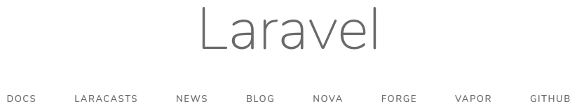

Порядок выполнения работы
- Узнать цель работы.
- Получить задание.
- Подготовить техническое и программное обеспечение.
- Внимательно ознакомиться с теоретическими сведениями и примером выполнения задания.
- Выполнить задание, одновременно подготавливая черновик отчёта.
- Оформить беловой вариант отчёта.
- Сдать работу преподавателю.
Цель работы
Научиться эксплуатировать менеджер пакетов программ.
Задание
Установить и использовать менеджер пакетов программ Composer для установки и настройки пакета Laravel.
Обязательное техническое и программное обеспечение
| Тип | Характеристика, наименование, версия |
|---|---|
| Web framework | Laravel ^7.5.2 |
| Браузер | Совместимый с HTML 5.2 и CSS Snapshot 2018 |
| Валидатор формата | The W3C CSS Validation Service |
| Валидатор формата | The W3C Markup Validation Service |
| Инструмент тестирования | PHPUnit ^8 |
| Компилятор | PHP ^7.2.5 |
| Менеджер пакетов программ | Composer ^1.6.0-RC |
| Модули PHP | ctype, json, mbstring, openssl, PDO, tokenizer, xml |
| Модули PHP для дополнений | bcmath (Telescope), zip (laravel/installer) |
| Модули PHP для MySQL | mysqlnd (не mysqli!), pdo_mysql |
| Модули PHP для SQLite | pdo_sqlite (не sqlite3!) |
| Операционная система | Windows Vista и выше или Ubuntu 18.04 и выше |
| СУБД | MySQL Community Server ^8.0.0 |
| Текстовый процессор | Совместимый с OpenDocument v1.0 по ГОСТ Р ИСО/МЭК 26300‑2010 |
| Текстовый редактор | Совместимый с UTF‑8 без маркера порядка байтов (BOM) |
Пользователям операционной системы Windows рекомендуется установить Open Server Panel Basic, который содержит Apache HTTP Server, MySQL и PHP.
Для составления исходного кода рекомендуется использовать следующие текстовые редакторы: Visual Studio Code, Sublime Text. «Блокнот», поставляемый с операционной системой Windows, использовать нельзя!
Теоретические сведения
Composer — менеджер пакетов программ, написанных в основном на PHP. Менеджер сам написан на языке программирования PHP 5.3.2 и распространяется в виде PHP‑архива с расширением phar, поэтому для запуска менеджера потребуется соответствующий или более новый компилятор PHP. Composer позволяет через интерфейс командной строки устанавливать (разрешая зависимости), настраивать, обновлять, удалять копии пакетов программ, размещённых в репозитории Packagist по веб‑адресу: https://packagist.org. К числу этих пакетов относится Laravel.
Laravel — это каркас серверной части веб‑приложения (англ. web framework), написанный на языке программирования PHP. Каркас упорядочивает и облегчает разработку программной системы. Для управления проектом через интерфейс командной строки в Laravel встроена утилита Artisan.
В основу Laravel положен шаблон проектирования программных систем Model‑View‑Controller (MVC).
Model — это модель данных и процессов предметной области. Так, модель магазина реализует сущности товара и покупателя, процесс управления ассортиментом товаров, процесс покупки и пр. Модель эксплуатирует средства доступа к оперативной памяти, базе данных, файловой системе и т. п. В Laravel за взаимодействие объектной (в приложении базы данных) и реляционной (в базе данных) моделей отвечает объектно‑реляционный мапер (ORM) Eloquent.
View, или вид, управляет формами представления модели. Благодаря разделению информации и форм её представления ассортимент товаров будет автоматически представлен клиенту в наиболее приемлемом для него формате: браузеру подойдёт HTML, мобильному приложению — JSON или XML, «Яндекс.Маркету» — YML. Задачи View в Laravel решает шаблонизатор Blade.
Controller передаёт команды клиента в модель. В веб‑приложениях контроллер взаимодействует с программным маршрутизатором, который сопоставляет веб‑адреса и методы (функции) контроллера.
Пример выполнения задания
Установка Composer
В Windows с Open Server Panel
Composer включён в дистрибутив Open Server Panel.
В Windows без Open Server Panel
- Посетите веб‑страницу https://getcomposer.org/download/.
- Скачайте Composer-Setup.exe.
- Запустите
Composer-Setup.exeот имени администратора. - Галочку Developer mode в окне Installation options отмечать не нужно. Нажмите на кнопку Next.
- В окне Settings check нажмите на кнопку Browse… и укажите путь до интерпретатора PHP. Например, при использовании OpenServer, установленного на диск
C:, путь будет таким:C:\OSPanel\modules\php\PHP_7.4\php.exe. Затем нажмите на кнопку Next. - Если появится окно PHP configuration error, установите галочку Create a
php.inifile и нажмите на кнопку Next. - Окно Proxy settings пропустите, нажав на кнопку Next.
- В окне Ready to install нажмите на кнопку Install. Необходимо подключение к Интернету.
- В окне Information Вам предложат перезагрузить компьютер. Нажмите на кнопку Next.
- В окне Completing Composer setup нажмите на кнопку Finish.
- Вызовите
composer.pharиз консоли и укажите путь до интерпретатора PHP.
В Linux
Скачайте последнюю версию composer.phar (latest snapshot) с веб‑страницы https://getcomposer.org/download/ или выполните:
wget https://getcomposer.org/composer.pharПеремещаем файл, чтобы его можно было вызывать из консоли по имени.
mv composer.phar ~/.local/bin/composerОбновление Composer
Запустите эмулятор терминала и выполните следующие команды. Если Вы используете Open Server Panel, запустите его, нажмите правой кнопкой мыши на флажок в области уведомлений Windows, в контекстном меню выберите пункт «Дополнительно⏵Консоль» и введите:
# Запускаем самообновление Composer’а
composer self-update
# Убедимся, что установлен Composer самой свежей версии (1.10.5)
composer -VУстановка инсталлятора Laravel
Выполните в эмуляторе терминала:
# Устанавливаем инсталлятор Laravel
composer global require laravel/installer
# Просматривая журнал установки, убедитесь, что Composer работает с PHP 7.4.
# Если нет, лучше удалить установленный пакет:
# composer global remove laravel/installerДобавление инсталлятора Laravel в PATH
В Windows
После успешной установки инсталлятор Laravel будет размещён в каталоге userdata\composer\vendor\bin. К сожалению, вызвать инсталлятор из консоли по имени файла сразу не получится: потребуется дополнительная настройка. Если Вы пользуетесь Open Server Panel, последовательность действий такова:
откройте каталог Open Server Panel;
создайте текстовый файл
path.txtв каталогеuserdata\config;впишите в указанный файл путь до каталога, в котором размещён инсталлятор Laravel (например,
%realprogdir%\userdata\composer\vendor\bin);на вкладке «Сервер» в настройках Open Server Panel ;
сохраните настройки, перезапустите сервер и консоль;
в консоли выполните:
PATHУбедитесь, что каталог, в котором размещён инсталлятор Laravel, указан в перечне.
В Linux
echo 'PATH="$HOME/.config/composer/vendor/bin:$PATH"' >> ~/.profile
. ~/.profileПуть может отличаться. Сверьтесь с https://laravel.com/docs/7.x/installation#installing-laravel.
Переход в каталог, где будет размещён каталог проекта
# Для Open Servel Panel
cd domains/localhost
# Для XAMPP
cd htdocsСоздание проекта на базе Laravel
# Убедимся, что установлен инсталлятор самой свежей версии (3.0.1)
laravel -V
# Выводим перечень команд инсталлятора Laravel
laravel list
# Нас интересует команда new. Выводим справочную информацию по ней
laravel new --help
# Разворачиваем проект под названием project на базе каркаса веб‑приложений Laravel
laravel new project
# Спускаемся в каталог project, автоматически созданный Composer’ом
cd project
# Выводим номер установленной версии Laravel (7.5.2)
php artisan -VПроверка
Запустите встроенный в PHP отладочный веб‑сервер:
php artisan serveВ окно терминала будет выведено сообщение с IP‑адресом и портом, которые занял веб‑сервер. Обычно это http://127.0.0.1:8000. Запустите браузер и обратитесь по указанному веб‑адресу. В окне браузера Вы должны увидеть следующую заставку:

Структура отчёта
Отчёт о выполнении работы должен содержать следующие разделы:
- постановка задачи;
- цель работы;
- аппаратные и программные средства;
- теоретические сведения;
- входные и выходные данные (по необходимости);
- тесты (по необходимости);
- исходный код;
- результаты работы.